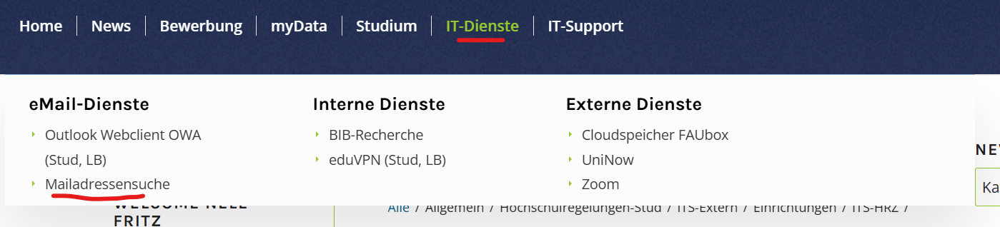
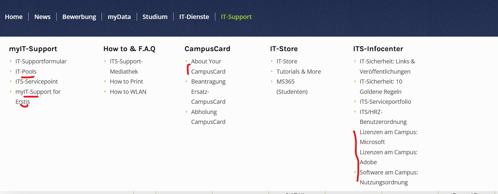
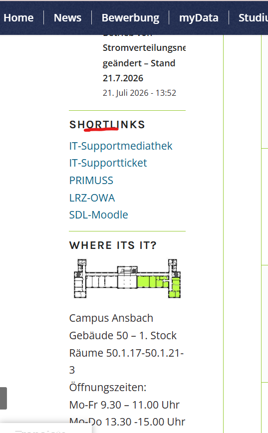
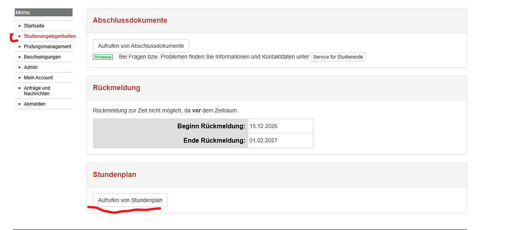
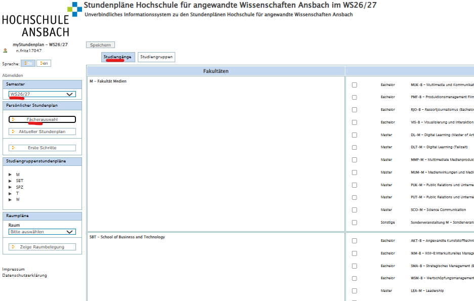
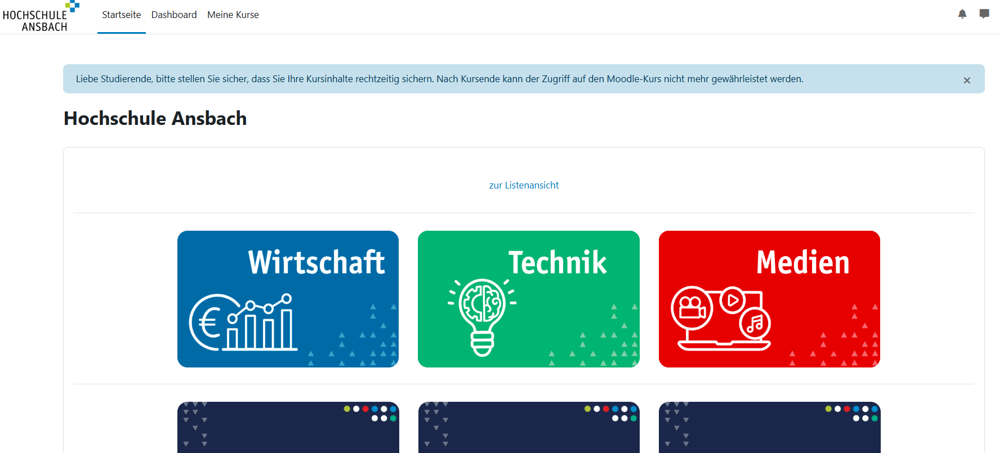
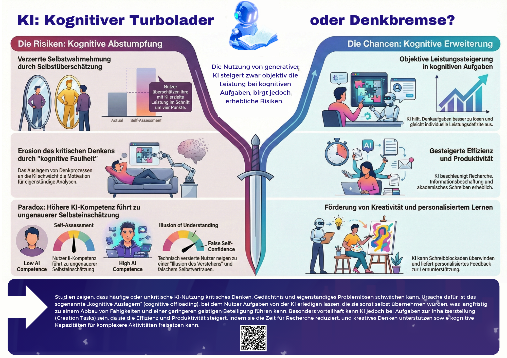

How To Study
Wie lernt man effizient im Studium?
1. Aufbau der ITSP-Seite
Abbildung 0.1
ITSP-Maildienste

Anmerkung. Eigene Darstellung.
Unter E-Mail-Dienste – Mailadressensuche können Sie die E-Mail-Adressen von Professorinnen und Professoren sowie von Kommilitoninnen und Kommilitonen suchen.
Folgende Seiten lohnen sich zum Durchlesen:
Abbildung 0.2
ITSP-Unterseiten

Anmerkung. Eigene Darstellung.
Abbildung 0.3
ITSP-Shortlinks

Anmerkung. Eigene Darstellung.
Vor allem die letzten drei Links sind für Studierende wichtig:
2. Was kann man in Primuss machen?
In Primuss finden Sie Ihren aktuellen Stundenplan, gestellte Anträge, Ihre Prüfungsanmeldung, Bescheinigungen, Ihr Notenblatt sowie Abschlussdokumente und die Rückmeldung für das nächste Semester.
Anmerkung: Beim Stundenplan müssen Sie zuerst Ihre Studiengruppe, das Semester und die Fächer auswählen, die Sie belegen möchten.
Abbildung 0.4
Primuss-Studienangelegenheiten

Anmerkung. Eigene Darstellung.
Abbildung 0.5
Primuss-Stundenplan

Anmerkung. Eigene Darstellung.
3. Wie funktioniert Moodle?
Abbildung 0.6
Moodle-Startseite

Anmerkung. Eigene Darstellung.
Unter Startseite finden Sie die verschiedenen Moodle-Kurse, die Sie wählen können. Für einige benötigen Sie einen Einschreibeschlüssel. Diesen erhalten Sie in der Regel in der ersten Vorlesung.
Ein Kurs, in den Sie sich auf jeden Fall einschreiben sollten, ist der AWM-Infokurs. Hier finden Sie Informationen, die spezifisch für Ihren Studiengang sind (z. B. Schwerpunkte, Abschlussarbeit, Organisatorisches).
4. Wie funktioniert der SciNeW-Moodle-Kurs?
Was ist der Theoretical Horizon?
Der Theoretical Horizon vermittelt Ihnen die Theorie des Moduls. Er basiert auf den Folien, der Pflichtliteratur und ausgewählten YouTube-Videos.
Was ist das Skill Lab?
Das Skill Lab sind die Übungsstunden zu unserer Vorlesung. Hier wenden wir die Theorie praktisch an. Im Skill Lab erstellen Sie geführt Ihren eigenen Science Guide. Dieser soll Ihnen als Nachschlagewerk dienen, wenn Sie eine wissenschaftliche Arbeit schreiben. Darin finden Sie später alle Informationen zum richtigen Zitieren, zum Formatieren in Word und zu den jeweiligen Kapitelinhalten einer wissenschaftlichen Arbeit.
Anders als bei einer KI, die verschiedene Zitierstile vermischt oder Informationen aus dem gesamten Internet nutzt, können Sie sich sicher sein, dass Ihr Science Guide Ihnen immer die richtige Antwort liefert.
Wann werde ich in meine Gruppe eingeteilt?
Diese Informationen werden in der ersten Veranstaltung bekannt gegeben. Sie können diese danach in den Veranstaltungsfolien nachlesen.
Was sind die Self Explorer?
Der Self Explorer (also diese Website) dient Ihnen zum Lernen für die Prüfung in diesem Modul. Er muss nicht verpflichtend bearbeitet werden. Alle Inhalte auf dieser Website stammen aus den Vorlesungsfolien oder der Pflichtliteratur. Sie finden hier also keine Inhalte, die nicht auch dort vorkommen, und verpassen nichts, wenn Sie nicht alle Podcasts, Leseeinheiten oder Videos ansehen.
Der Self Explorer dient dem Verständnis und der Prüfungsvorbereitung, damit Sie keine Zeit mit Zusammenfassungen oder Lernzielen verbringen müssen. Er enthält Übungen und Quizze, die in ähnlicher Form in der Prüfung vorkommen können. Es wird daher empfohlen, diese mindestens einmal zu lösen.
Was sind die Zusatzmaterialien?
Die Zusatzmaterialien dienen Ihnen als erster Einstiegspunkt für Inhalte, die Sie noch einmal wiederholen möchten oder nicht vollständig verstanden haben. Sie dienen der Vertiefung und machen die Theorie oft durch Beispiele und Anwendungsfälle verständlicher.
Was ist, wenn ich an einem Termin nicht kann?
Wenn Sie an einem Termin nicht teilnehmen können, müssen Sie die Inhalte der Vorlesung mithilfe der Veranstaltungsfolien und dem Skill-Lab Begleitbuch selbstständig nacharbeiten.
Wofür bekomme ich Badges?
Sie bekommen Badges, wenn Sie eine Abgabe erfolgreich eingereicht haben. Diese dienen als Belohnung für das aktive Mitmachen im Kurs.
Was ist die Side Quest?
Die Side Quest dient der Modulverantwortlichen dazu, zu verstehen, ob die vermittelten Inhalte verständlich erklärt wurden oder ob sie zum Beispiel im nächsten Semester vertieft erklärt werden müssen. Sie hilft uns, den Kurs stetig zu verbessern. Im Gegenzug dient die Side Quest den Studierenden als Bonusleistung.
Wie erhalte ich die Bonusleistung?
Diese Informationen erhalten Sie in der ersten Veranstaltung und können in den Folien der ersten Veranstaltung nachgelesen werden.
5. Wann schreibe ich eine E-Mail?
- Habe ich schon auf Primuss nach meinem Problem gesucht?
- Habe ich schon auf Moodle nach meinem Problem gesucht?
- Habe ich schon auf der ITSP-Seite nach meinem Problem gesucht?
- Habe ich schon meine Kommilitoninnen und Kommilitonen gefragt (z. B. über WhatsApp)?
- Wer ist der richtige Ansprechpartner für meine Frage? Die Dekanin bzw. der Dekan, der Studierendenservice, die Professorin bzw. der Professor oder die Studiengangsleitung?
- Falls Professorin bzw. Professor: Kann die Frage bis zur nächsten Vorlesungseinheit warten?
6. Wie studiert man?
- Wichtige Termine im Blick behalten: Vor allem am Anfang des Semesters ist es wichtig, alle genannten Termine in Ihren Kalender einzutragen (z. B. Exkursionen, Blockwochen, längere Vorlesungen, Abgabetermine). Wenn Sie nebenbei berufstätig sind, lohnt es sich besonders, Arbeitstage rechtzeitig zu verlegen. Die wichtigsten Termine werden meist in der ersten Vorlesungsstunde mitgeteilt. Hilfreich ist es, alles an einem Ort einzutragen. Dafür eignen sich verschiedene Kalendertools, zum Beispiel Outlook, Google Kalender, Apple Kalender oder der Moodle-Kalender.
- Nehmen Sie an Vorlesungen und Seminaren teil. Nutzen Sie Ihre Zeit sinnvoll: Eine aktive Teilnahme hilft Ihnen im Lernprozess, sodass Sie das Material in der Prüfungszeit nur noch wiederholen müssen. Fragen Sie nach, wenn Sie etwas in der Vorlesung nicht verstehen. Machen Sie sich während der Vorlesung Notizen, um sich Konzepte später leichter ins Gedächtnis zu rufen. Beteiligen Sie sich an Diskussionen und Gruppenarbeiten, um den Stoff besser zu verstehen und verschiedene Perspektiven Ihrer Kommilitoninnen und Kommilitonen kennenzulernen.
- Nutzen Sie auch Ihren Zugang zu den unterschiedlichen Angeboten der Hochschule Ansbach. Die Hochschule bietet vielseitige Angebote und Aktivitäten.
7. Wie lernt man?
- Unverzichtbar ist zunächst ein Lernplan für die Prüfungszeit. Bei sechs verschiedenen Modulen mit unterschiedlichen Prüfungsformen ist es normal, dass Sie nicht alles auswendig im Kopf haben. Planen Sie, wann Sie welches Modul lernen und an welchen Tagen Sie sich welche Kapitel vornehmen. Planen Sie am Ende außerdem Zeit zum Wiederholen ein. So behalten Sie auch in stressigen Phasen den Überblick. Ein guter Lernplan hilft Ihnen auch, Prokrastination und Überforderung zu vermeiden. Wenn Sie früh anfangen, ist die Wahrscheinlichkeit hoch, dass Sie das Gelernte auch länger behalten. Nutzen Sie das Privileg des Studierens und nehmen Sie so viel Wissen mit wie möglich! Unser Tipp: die Hochschulplattform DIAS.
- Legen Sie sich für jede Lernsession persönliche Lernziele fest, die Sie an diesem Tag schaffen möchten. Viele Professorinnen und Professoren stellen diese zur Vorlesung oder in ihrem Moodle-Kurs bereits zur Verfügung. So können Sie auch kontrollieren, ob Ihre Lernsession produktiv war oder ob Sie ins passive Lernen abgeschweift sind, zum Beispiel, indem Sie Inhalte nur abgeschrieben und somit kopiert haben, ohne wirklich darüber nachzudenken.
- Konzentrieren Sie sich während einer Lernsession auf ein einziges Medium, anstatt Multitasking zu betreiben. Hören Sie entweder einen Podcast oder lesen Sie die Vorlesungsfolien. Beides zusammen führt zu geringer Konzentration und zu einer schlechteren Aufnahme der Inhalte.
- Halten Sie diese drei Lernphasen ein: Organisieren, Anwenden, Wiederholen.
Abbildung 0.7
Drei LernphasenAnmerkung. Mit Google Gemini erstellt (2026).
- Organisieren: Lernplan und Lernziele festlegen, Überschriften und Themen oberflächlich durchgehen.
- Anwenden: Konzepte und Theorien verstehen, Anwendungsaufgaben und Quizze zur Selbstkontrolle bearbeiten, bei komplexen Themen weitere Informationen suchen, Anwendungsbeispiele finden sowie das Wissen mit Ihrem Alltagswissen verknüpfen.
- Wiederholen: wichtige Begriffe und Theorien wiederholen.
- Methodenkoffer für selbstgesteuertes Lernen
- Vor allem eine aktive Teilnahme wird Ihnen viel bringen. Fragen Sie während der Vorlesung nach, wenn Sie etwas nicht verstehen, und versuchen Sie, die Konzepte mit Ihrem Alltag und bereits erlerntem Wissen zu verknüpfen! Das neuronale Netzwerk des Gehirns lernt, indem es neue Verbindungen zwischen den Nervenzellen bildet. Neues Wissen wird also mit altem verknüpft, und es entstehen Verbindungen zwischen unterschiedlichen Themen. Denken Sie daher auch darüber nach, in welchen anderen Situationen die gelernten Inhalte relevant sein können, und überlegen Sie, welche Ähnlichkeiten und Unterschiede es gibt.
- Wenn Sie erheblich länger als Ihre Kommilitoninnen und Kommilitonen zum Lernen brauchen oder an manchen Tagen lernen, ohne etwas davon zu behalten, sollten Sie Ihre Lernstrategie anpassen.
- Um Ihren Lernprozess und Ihre Lernstrategie nachzuverfolgen und zu prüfen, ob das, was Sie tun, auch etwas gebracht hat, empfiehlt es sich, zu Beginn ein Lerntagebuch zu führen. Das hilft Ihnen auch langfristig herauszufinden, wie Sie effizient viele Module gleichzeitig lernen können.
- Versuchen Sie, vor allem bei komplizierten Themen, auf KI zu verzichten.
Abbildung 0.8
Chancen und Risiken von KI
Anmerkung. Teilweise mit Hilfe von Google Gemini (2026) erstellt.
- Trainieren Sie Ihr Gehirn weiter und schreiben Sie Texte selbst, auch wenn es länger dauert, um Ihre Schreibkompetenz nicht zu verlieren. KI kann ein falsches Gefühl des Verständnisses vermitteln und dadurch das langfristige Lernen beeinträchtigen.
- Überfordern Sie sich nicht und nehmen Sie sich ausreichend Pausen.